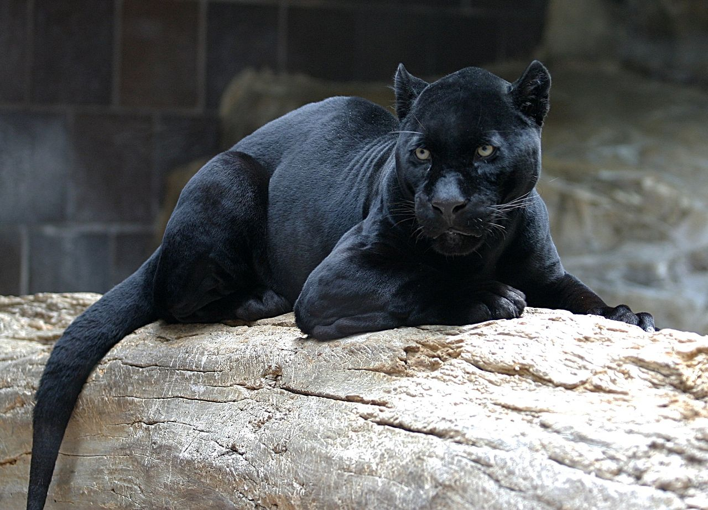

Black Panther
The black panther's black coat is caused by a recessive allele in the leopard, and by a dominant allele in the jaguar.
- Scientfic Name: Panthera pardus
- Average Length: 6 - 7.2 ft.
- Average Lifespan: 10 - 12 years
- Habitat: Rainforest
A black panther is the melanistic colour variant of the leopard (Panthera pardus) and the jaguar (Panthera onca). Black panthers of both species have excess black pigments, but their typical rosettes are also present. They have been documented mostly in tropical forests, with black leopards in Kenya, India, Sri Lanka, Nepal, Thailand, Peninsular Malaysia and Java, and black jaguars of the Americas in Mexico, Panama, Costa Rica and Paraguay.